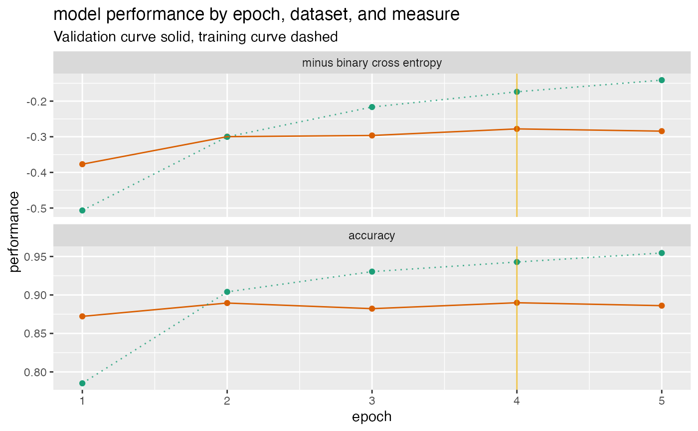

Plot a history of model fit performance over the number of training epochs.
plot_Keras_fit_trajectory(
d,
title,
...,
epoch_name = "epoch",
lossname = "loss",
loss_pretty_name = "minus binary cross entropy",
perfname = "acc",
perf_pretty_name = "accuracy",
pick_metric = loss_pretty_name,
fliploss = TRUE,
discount_rate = NULL,
draw_ribbon = FALSE,
val_color = "#d95f02",
train_color = "#1b9e77",
pick_color = "#e6ab02"
)data frame to get values from.
character title for plot.
force later arguments to be bound by name
name for epoch or trajectory column.
name of training loss column (default 'loss')
name for loss on graph (default 'minus binary cross entropy')
name of training performance column (default 'acc')
name for performance metric on graph (default 'accuracy')
character: metric to maximize (NULL for no pick line - default loss_pretty_name)
flip the loss so that "larger is better"? (default TRUE)
numeric: what fraction of over-fit to subtract from validation performance.
present the difference in training and validation performance as a ribbon rather than two curves? (default FALSE)
color for validation performance curve
color for training performance curve
color for indicating optimal stopping point
ggplot2 plot
Assumes a performance matrix that carries information for both training and validation loss, and an additional training and validation performance metric, in the format that a Keras history object returns.
By default, flips the loss so that better performance is larger for both the loss and the performance metric, and then draws a vertical line at the minimum validation loss (maximum flipped validation loss). If you choose not to flip the loss, you should not use the loss as the pick_metric.
The example below gives a fit plot for a history report from Keras R package. Please see https://winvector.github.io/FluidData/PlotExample/KerasPerfPlot.html for some details.
if (requireNamespace('data.table', quietly = TRUE)) {
# don't multi-thread during CRAN checks
data.table::setDTthreads(1)
}
# example data (from Keras)
d <- data.frame(
val_loss = c(0.3769818, 0.2996994, 0.2963943, 0.2779052, 0.2842501),
val_acc = c(0.8722000, 0.8895000, 0.8822000, 0.8899000, 0.8861000),
loss = c(0.5067290, 0.3002033, 0.2165675, 0.1738829, 0.1410933),
acc = c(0.7852000, 0.9040000, 0.9303333, 0.9428000, 0.9545333) )
plt <- plot_Keras_fit_trajectory(
d,
title = "model performance by epoch, dataset, and measure")
print(plt)
